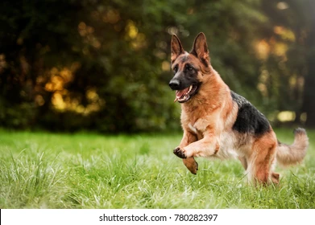

You can have a look on the below breeds we have......
Adopting a Golden Retriever puppy brings endless joy and companionship to your life. Known for their gentle nature, intelligence, and boundless loyalty, these dogs make perfect family pets and thrive in loving homes. Their playful demeanor makes them wonderful with children, while their eagerness to please ensures they're easily trainable. Golden Retrievers are active and love outdoor activities, offering you a fun and energetic companion. Beyond their adorable looks and fluffy coats, they provide emotional support and form lifelong bonds with their owners. By adopting, you also give a deserving puppy a chance at a happy, fulfilling life.
.jpg)
Golden Retriever ->
Adopting a German Shepherd puppy offers a loyal, intelligent, and protective companion who quickly becomes a beloved family member. Renowned for their courage and versatility, these dogs excel as both affectionate pets and skilled working dogs. They are highly trainable, making them ideal for obedience training, sports, and specialized tasks. Their natural protective instincts make them excellent guardians, while their playful and loving nature shines in family settings. German Shepherds are active and thrive on mental and physical stimulation, perfect for energetic owners. By adopting, you provide a devoted puppy the opportunity to grow in a safe and loving home.
German Shepard ->
Adopting a Pit Bull puppy means welcoming a loyal, affectionate, and energetic companion into your home. Often misunderstood, Pit Bulls are incredibly loving and form deep bonds with their families. They are intelligent and eager to please, making them highly trainable and adaptable to various lifestyles. Their playful nature and gentle demeanor make them excellent with children when properly socialized. Pit Bulls are active dogs who thrive with regular exercise and attention. By adopting, you not only gain a devoted friend but also help break the stigma around this wonderful breed, giving them the loving home they deserve.

Pit Bull ->
Adopting a Labrador Retriever puppy means bringing home a bundle of joy, loyalty, and endless affection. Labradors are known for their friendly and outgoing nature, making them fantastic companions for individuals and families alike. Their intelligence and eagerness to please make training a breeze, whether for obedience, assistance work, or fun tricks. Labradors are playful, energetic, and love outdoor activities, making them ideal for active lifestyles. They are also incredibly patient and gentle, making them great with children and other pets. By adopting, you provide a loving home to a devoted and cheerful puppy ready to fill your life with happiness.
Labrador ->